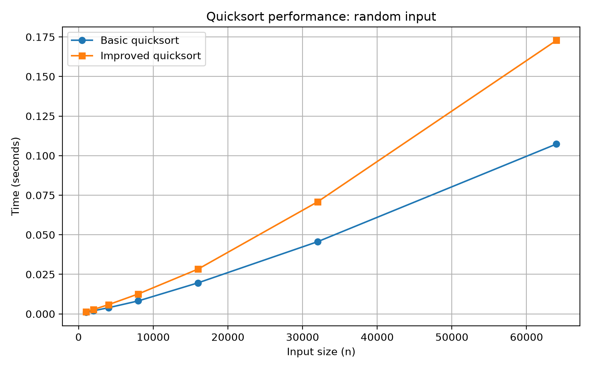
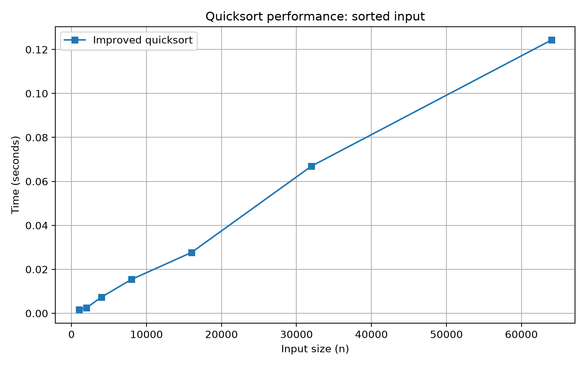
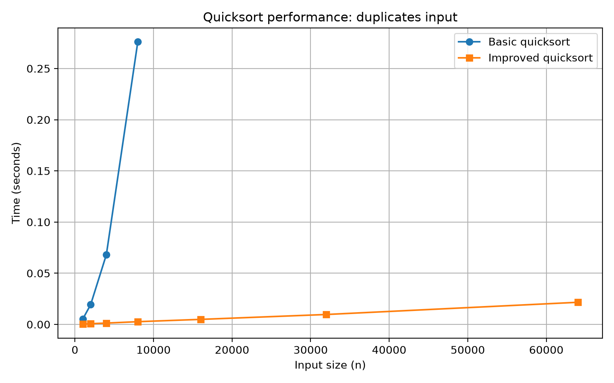

This report compares a basic last-element-pivot quicksort with an improved randomized quicksort for transaction amounts. The main concern is that real lists may already be sorted or contain many repeated values. Those patterns can make an ordinary quicksort split its work unevenly.
2. Implementation
2.1 Basic quicksort
The basic version uses Lomuto partitioning and the last element as its pivot. Values no greater than the pivot move to its left. It sorts in place and follows both partitions recursively. This version is included to show how a simple pivot choice can fail on structured data.
2.2 Improved quicksort
The improved version chooses a random pivot, groups values into less-than, equal-to and greater-than sections, and uses insertion sort for short ranges. It recursively sorts the smaller side and loops over the larger side, which keeps recursion depth logarithmic. Grouping equal values also avoids repeatedly sorting duplicate amounts.
3. Testing
Both versions were checked against Python's sorted() on 500 seeded random lists. The tests also cover an empty list, one item, all equal values, sorted and reverse-sorted lists, and negative values. All eight test groups passed. The sample output from both implementations was identical.
The performance experiment used random, already sorted, and duplicate-heavy lists at sizes from 1,000 to 64,000. A basic-sort run that raised RecursionError is reported as a result rather than omitted.
4. Complexity and Performance
4.1 Why the basic quicksort fails
For sorted input, the last element is the largest value, so each partition leaves one empty side and one side with n - 1 values. The recurrence is:
T(n) = T(n - 1) + Θ(n) = Θ(n²)
The recursion chain also grows linearly and exceeds Python's recursion limit. The average-case assumption of reasonably balanced pivots does not hold for sorted data. With duplicate-heavy input, the basic partition's <= pivot condition also sends equal values repeatedly to the same side.
4.2 Measured execution times (seconds)
n
Random basic
Random improved
Sorted basic
Sorted improved
Duplicates basic
Duplicates improved
1,000
0.00106
0.00118
Crash
0.00119
0.00450
0.00034
2,000
0.00171
0.00270
Crash
0.00256
0.01655
0.00057
4,000
0.00372
0.00554
Crash
0.00538
0.06682
0.00121
8,000
0.00806
0.01289
Crash
0.01231
0.25019
0.00303
16,000
0.01908
0.02558
Crash
0.02774
Crash
0.00423
32,000
0.03817
0.05951
Crash
0.05646
Crash
0.01098
64,000
0.08249
0.13246
Crash
0.12775
Crash
0.01701
“Crash” means the basic implementation raised RecursionError. Timings are from Python 3.14 on this computer.

Random input

Sorted input

Duplicate-heavy input
5. Cutoff Selection and Python Comparison
On 100,000 seeded random values, I tested six insertion-sort cutoffs. Cutoff 8 was fastest in this Python 3.14 run. The selected cutoff can vary with the computer, interpreter and input.
Cutoff
Time (seconds)
1
0.28884
4
0.28920
8
0.24010
16
0.28437
32
0.26035
64
0.24815
Using the selected cutoff, improved quicksort sorted 100,000 values in 0.24149 seconds. Python's sorted() took 0.01330 seconds, about 18 times faster. The built-in benefits from a highly tuned algorithm and optimized native implementation; this experiment cannot separate the contribution of each.
6. Critical Reflection
Why did the basic quicksort fail on sorted data? Its final-element pivot repeatedly selected the maximum, producing a partition of sizes zero and n - 1. The average-case analysis assumes pivots tend to make more balanced partitions. Sorted data violated that assumption and created a linear recursion chain.
Why use insertion sort for small parts? On a short range, insertion sort has little setup work and moves nearby values efficiently. Its quadratic growth is limited to small subarrays, so it can reduce overhead in the complete quicksort.
How did I check AI assistance? Codex helped review and organize the implementation. I ran the sample, all eight test groups and the timing experiment, and compared outputs with sorted(). The basic algorithm's crashes were recorded rather than treated as valid sorted results.
7. Conclusion
The fixed-pivot quicksort is quick on random data but unreliable on sorted and duplicate-heavy lists. Random pivots, three-way partitioning, insertion sort for short ranges and smaller-side recursion make the improved version more robust. Python's built-in sort remained the fastest in this experiment.
AI Tool Declaration. OpenAI Codex was used to review the code and help prepare the analysis. I verified the implementation with the supplied tests, random comparisons and benchmark runs.